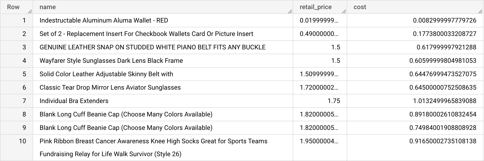
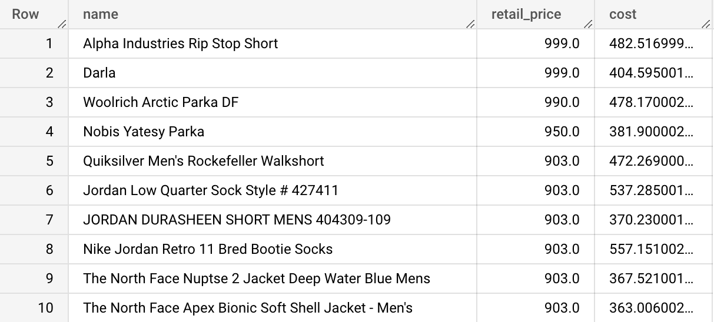
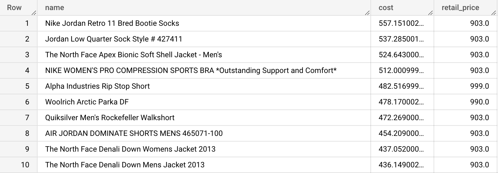
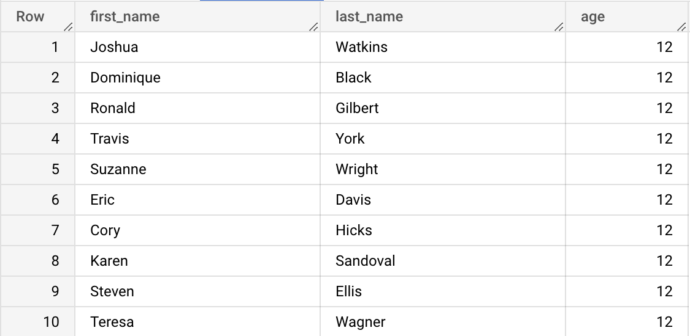
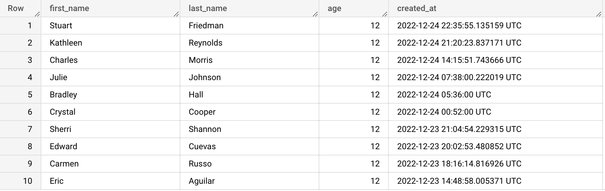
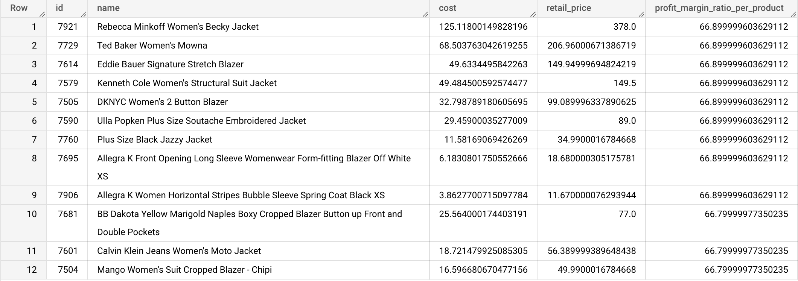

By default, the results returned by a SELECT query are not sorted in any specific order. By default, the order of the results is not guaranteed. If we want to ensure a specific order when displaying the result set, we can use the ORDER BY clause. By default, rows are sorted in ascending order.
Type the query below in the BigQuery console and run it. Don't copy paste. 😉
SELECT name, retail_price, cost
FROM bigquery-public-data.thelook_ecommerce.products
ORDER BY retail_price
LIMIT 10;
Example results:

We can use the ASC keyword to specify an ascending sort explicitly.
Type the query below in the BigQuery console and run it. Don't copy paste. 😉
SELECT name, retail_price, cost
FROM bigquery-public-data.thelook_ecommerce.products
ORDER BY retail_price ASC
LIMIT 10;
Example results:
We must use the DESC keyword to specify a descending sort.
Type the query below in the BigQuery console and run it. Don't copy paste. 😉
SELECT name, retail_price, cost
FROM bigquery-public-data.thelook_ecommerce.products
ORDER BY retail_price DESC
LIMIT 10;
Example results:

We can sort the results using several successive columns.
Type the query below in the BigQuery console and run it. Don't copy paste. 😉
SELECT name, cost, retail_price
FROM bigquery-public-data.thelook_ecommerce.products
ORDER BY cost DESC,
retail_price DESC
LIMIT 10;
Example results:

Here is a partial view of the order in which the database engine evaluates the components of our SELECT queries.
| Step | Clause | Description |
|---|---|---|
| 1 | FROM | Chooses the data to get the data from. |
| 2 | WHERE | Filters the data. |
| 4 | SELECT | Displays the results. |
| 4 | ORDER BY | Sort the results. |
| 3 | LIMIT | Limits the number of rows displayed. |
bigquery-public-data.thelook_ecommerce.users
Write a query that will display the names of up to 10 of the youngest users, sorted by age from youngest to oldest.

SELECT first_name, last_name, age
FROM bigquery-public-data.thelook_ecommerce.users
ORDER BY age ASC
LIMIT 10;
bigquery-public-data.thelook_ecommerce.users
Write a query that will display the names of up to 5 of the youngest and most recent users, sorted by age from youngest to oldest, and by creation date from most recent to less recent.

SELECT first_name, last_name, age, created_at
FROM bigquery-public-data.thelook_ecommerce.users
ORDER BY age ASC, created_at DESC
LIMIT 10;
bigquery-public-data.thelook_ecommerce.products

SELECT id,
name,
cost,
retail_price,
((retail_price - cost) / retail_price) * 100 AS profit_margin_ratio_per_product
FROM bigquery-public-data.thelook_ecommerce.products
WHERE ((retail_price - cost) / retail_price) * 100 >= 50
ORDER BY profit_margin_ratio_per_product DESC,
retail_price DESC,
cost ASC
LIMIT 12;
Remember the order of operations. The profit_margin_ratio_per_product alias defined in the SELECT clause will not be available in the WHERE step but will be available in the ORDER BY step.